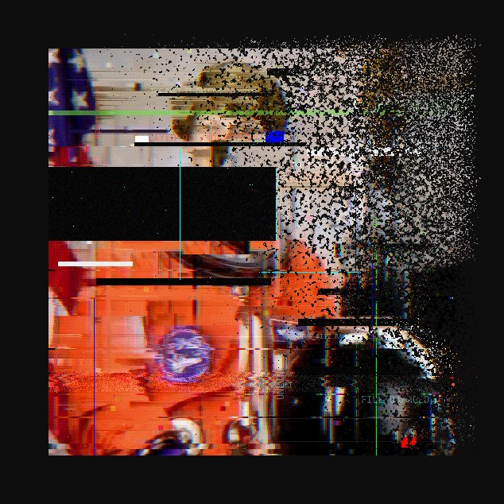
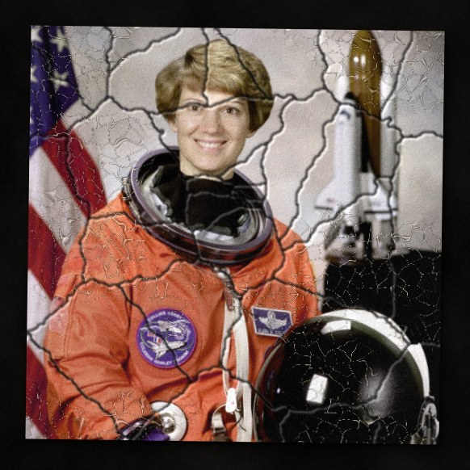
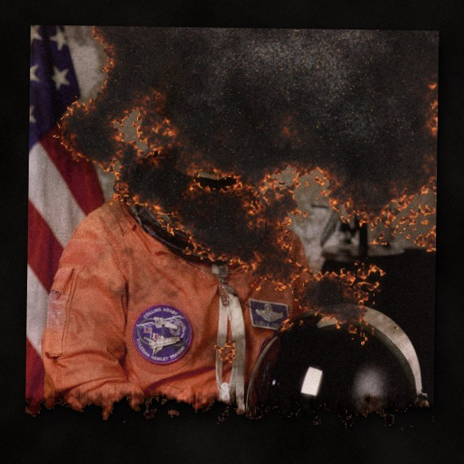
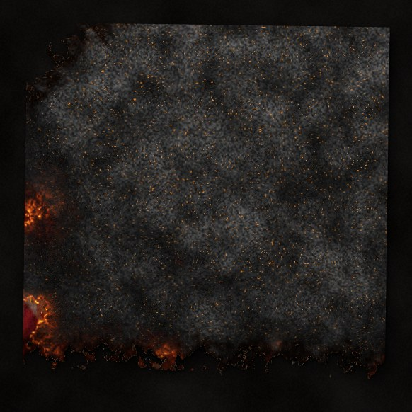
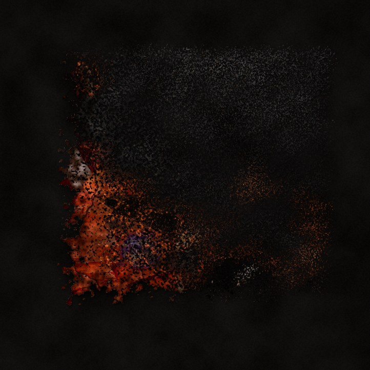
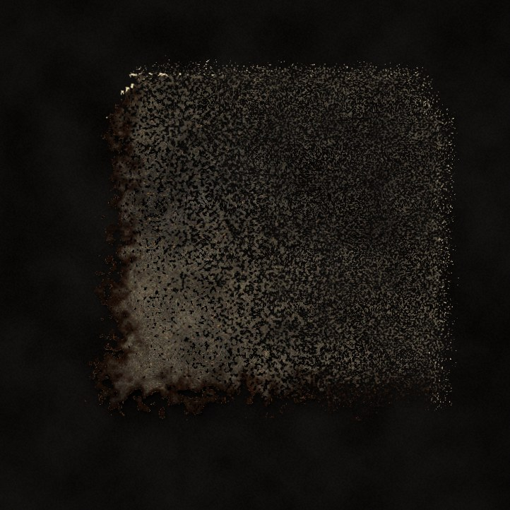
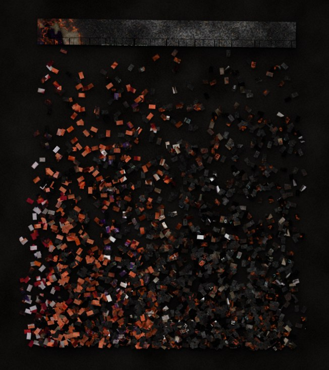

DROP A PHOTO HEREor click "Open photo" / paste from the clipboardnothing is uploaded, everything happens on your machine
drop your own photo here, or paste it
ORIGINAL
rendering...
PRESETS
A photograph is a promise that the past will hold still. This machine breaks that promise.
Drop in any picture and watch it age badly: dyes dying at different speeds, emulsion cracking and peeling, corners torn off, water, mould, fire. Or feed it to the shredder. Or let it rot from the inside, byte by byte, until it dissolves into drifting dust.
Every ruin is deterministic: same photo, same seed, same destruction. Save the whole decay as a series and exhibit the erasing itself.









What time does to paper and dye.
The print is half way through the slot.
The file itself rots.
The print is a window and somebody threw a brick.
A burn front eats the print from the edge.
Hard presets. What is left is the destroyed copy.